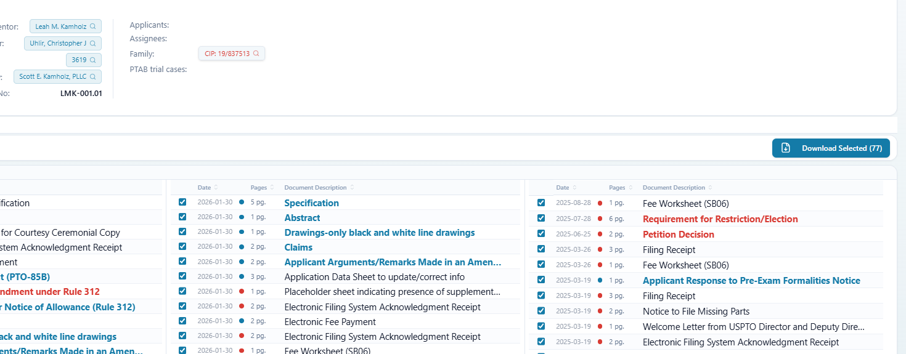

File wrappers in seconds.

Free accounts include limited access.
Prosecution History
Follow the exchange.
Color-coded descriptions make the back-and-forth between applicant and examiner immediately clear.

PTAB Documents
PTAB trial documents, too.
Read in place or download.

Supporting Tools
Related cases. Ongoing developments.
Patent families
Case tracking
Recent PTAB & reexamination activity

Try it with a patent you’re working on.
Create a free account and explore ToolPat. Usage limits apply.
Interested in ToolPat for your firm? Contact us about
firm-wide access →